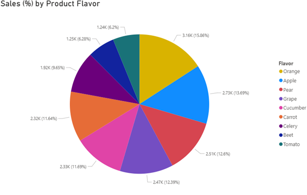

Pie charts are best for showing part-to-whole relationships in data. Although they have a place, they are frequently misused. As opposed to the other visualizations which rely on height and length to convey differences, two pie pieces of similar size can be difficult if not impossible to tell apart, and how much each piece contributes to the whole can be hard to tell when there are many pieces, such as in the example above. Pie charts should generally have only a few pieces to be most effective.
Top image is a screenshot of a self-made chart from Microsoft Power BI. Created by Alex Lents.